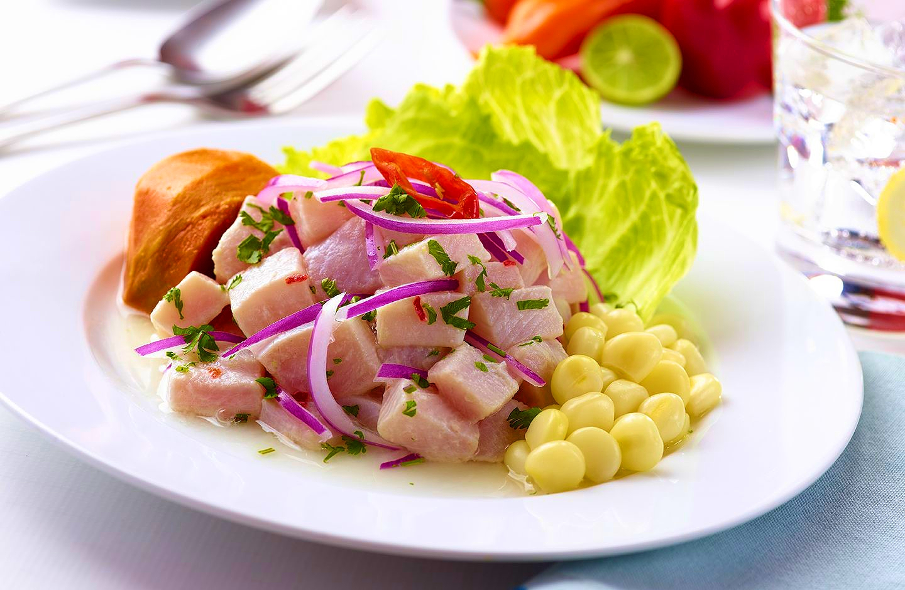

Go back to look at other recipes

One of the most famous dishes from Peru. Made from raw fish cured in fresh citrus juices, usually lemon or lime. It's also spiced with chili peppers and onions. It's name originates from the Quechuan word siwichi, which means fresh or tender fish.The peruvian origin of the dish is widely agreed upon, supported by several world renown chefs.
There are many variations of this dish around the world but in general most of them are marinated in a citrus-based mixture. The citric acid causes the proteins in the seafood to become denatured, appearing cooked. Most countries have given ceviche its own touch of individuality by adding their own particular garnishes.The following recipe is from Peru.
Go back to look at other recipes